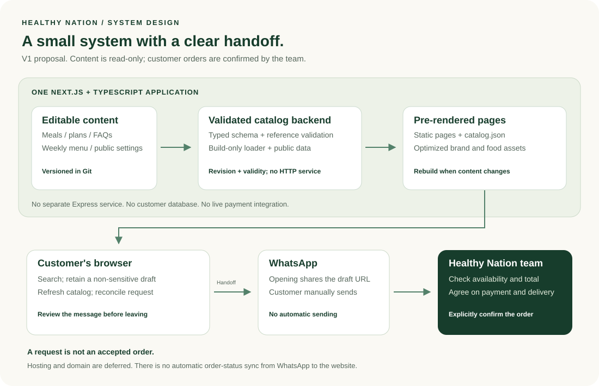

The website reads.
Meals, plans, and FAQs live in typed files. Build-time validation publishes pages and a versioned catalog snapshot. A browser admin can come later.
One Next.js + TypeScript application, published as static pages. A validated, read-only menu and a clear WhatsApp handoff. No database or payment complexity before the business needs it.
Meals, plans, and FAQs live in typed files. Build-time validation publishes pages and a versioned catalog snapshot. A browser admin can come later.
Search, choices, and quantities form a local request draft. Nothing is purchased, reserved, or charged on the website.
The customer sends the message in WhatsApp. The team checks availability, agrees on the details, and accepts the order.

Open the diagram to zoom. Hosting and the real domain are deliberately undecided.
Frontend + backend does not mean two separate applications.
The backend validates content at build time. Next.js produces public pages and a small catalog snapshot; no permanent API service is needed. Generate meal routes and image variants for static delivery. A hosting vendor can still be chosen later.
Check service coverage and ordering windows, then compare meals by price and portion or explore a plan.
Add meals and supported preferences. Review a request, not an accepted order.
Preview the message. Opening WhatsApp shares the prepared draft with WhatsApp; the customer then presses Send.
The team agrees on availability, final total, payment arrangement, and delivery.
A WhatsApp click is not proof of a sent message or a sale. Always offer selectable/copyable text. Do not prefetch the link or log its message body. No order status automatically comes back to the site.
| Screen | Its job | Main action |
|---|---|---|
| Home | Introduce the food and brand; surface service coverage early. | Browse the menu |
| Menu + meal details | Compare price and portion alongside ingredients and preferences. | Add to request |
| Meal plans | Compare cadence, choice rules, and fees; see a sample weekly menu. | Ask about a plan |
| Request review | Make the selection and WhatsApp handoff explicit. | Preview request |
About, FAQs, and catering are supporting sections. Individual meals should have shareable detail URLs in the app.
| Location | Stored or handled here | Not here |
|---|---|---|
| Content files in Git | Meals, plan cadence/terms, sample/live status, FAQs, public settings, catalog revision and validity. | Customers, addresses, medical notes, orders, payments. |
| Browser session storage | Schema version, source revision, non-sensitive item IDs, quantities, choices, purpose, requested date. | Free-form health information, login credentials, payment details. |
| WhatsApp + private team register | Necessary fulfillment details, explicit confirmation, operational follow-through. | Automatic integration with the site in V1. |
No application API endpoints in the V1 baseline. Pages consume the build-only catalog module. A same-origin static catalog.json lets the browser refresh before handoff. Only the public data snapshot and lightweight draft logic enter the client bundle.
Before an offer handoff, fetch the catalog with revalidation. Check revision and its owner-approved validity window; a draft schema version alone is not freshness.
Keep unaffected selections. Flag changed prices, removed options, and unavailable meals for review. Block offer handoff if freshness cannot be established.
The customer may return from WhatsApp without sending. Keep the draft until an explicit reset, with undo. Include only the active inquiry purpose.
Concept dishes and illustrations are labeled. Prices, macros, reviews, service coverage, and contact details are never invented.
Show missing-contact, unavailable-meal, invalid-draft, and no-results states. Provide a copyable message if WhatsApp cannot open.
A confirmed number alone cannot enable sample offers. Live requests require approved contact and publication, a fresh valid catalog, and non-sample selections. Approve general inquiries separately.
| Gate | Proposed acceptance |
|---|---|
| Content and release | Name a business approver, technical publisher, and backup. Validate, typecheck, lint, test, preview, and publish content/assets atomically. Smoke-test after release. |
| Urgent corrections | Use the validated release path for unavailable meals. Review current availability before rollback; old content must not silently reactivate withdrawn offers. |
| Accessibility | WCAG 2.2 AA target, keyboard and focus checks, 320px reflow, 200% text zoom, reduced motion, named controls, and dialog focus return. |
| Performance | Target field LCP ≤ 2.5s, CLS ≤ 0.1, INP ≤ 200ms at p75. Before launch, use a documented mobile lab profile and initial 200KB compressed per-route JavaScript / per-hero-image budgets. |
| Business proof | Confirm real meal prices/portions, coverage, plan cadence, response capacity, and contribution margin. Validate value and repeat demand in a small pilot, not with fabricated claims. |
Targets, not measurements or guarantees. Confirmed ordinary-meal pricing is a launch decision; catering can remain quote-based. Repeat requests can use the current menu or existing chat without waiting for V3 accounts.
Menu, meal plans, local request draft, WhatsApp handoff, and manual confirmation.
Transactional database, delivery checks, verified payments, and an internal order-management workflow.
Potential accounts, reordering, schedule changes, pause/skip rules, and consent-based recurring billing.
Real menu content, food photos, prices, a verified business number, delivery coverage, and policies are still needed. Domain ownership and hosting can be handled after the app direction is approved.